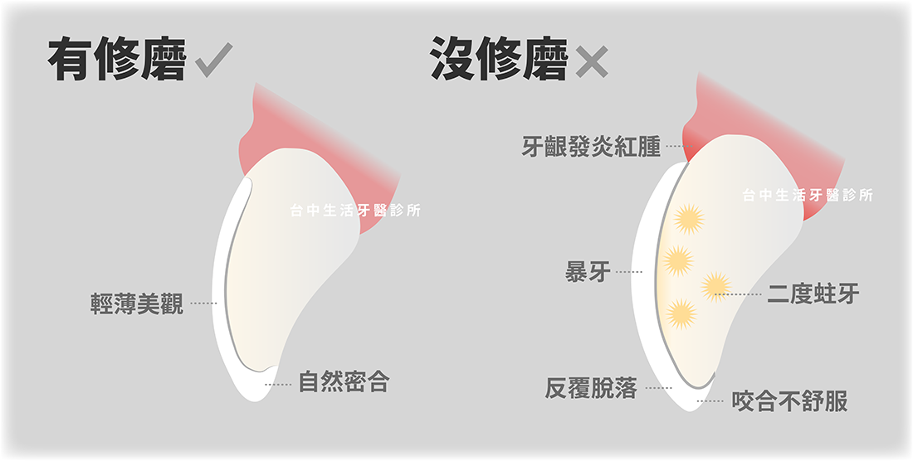
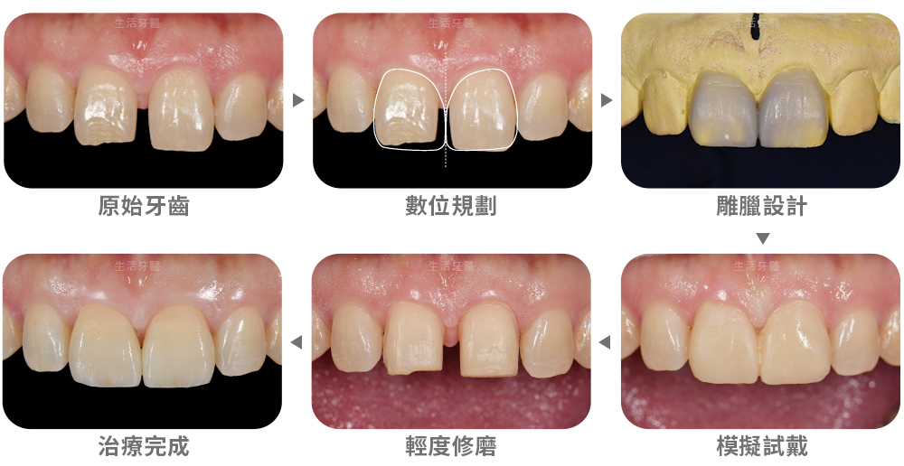

身為專業的台中牙醫診所，我們每天都會遇到許多對陶瓷貼片充滿好奇與期待的患者。其中一個最常見的問題，就是：「做陶瓷貼片或美齒貼片是不是一定要磨牙齒？」這個疑問，往往成為許多人決定是否進行陶瓷貼片療程的關鍵。今天，廣受推薦的台中生活牙醫診所將透過這篇文章，為您徹底解開這個迷思。
陶瓷貼片/美齒貼片是什麼？
首先，讓我們快速了解一下陶瓷貼片（也稱作美齒貼片）。它是一種超薄、高強度的陶瓷美學修復體，就像一片輕薄的隱形眼鏡，能精準地黏貼在牙齒表面。透過這種方式，我們可以有效改善牙齒的顏色（如四環素牙、黃牙）、形狀、大小，甚至是輕微的牙齒排列問題（如牙縫過大）。它的優點在於自然美觀、不易染色且耐用性高，是許多人追求完美笑容的首選。
磨牙的迷思：牙醫診所怎麼評估要不要磨牙？
回到大家最關心的問題：「做陶瓷貼片一定要磨牙嗎？」台中生活牙醫診所的答案是：不一定，但絕大部分都需要。這完全取決於您的牙齒狀況與美學需求。
- 需要修磨牙齒的情況:
- 不需修磨或微幅調整的情況:
如果您的牙齒本身比較突出、排列不整，或是希望在視覺上讓牙齒顯得更為平整、纖細，那麼我們會需要進行微量的牙齒修磨，目的是為了讓貼片能完美地貼合牙齒，避免貼片黏著後視覺上看起來像大暴牙。修磨的量通常非常少，大多在0.3mm到0.5mm之間，且僅限於琺瑯質表層，不會傷害到牙齒內部結構。
在某些特定情況下，例如牙齒天生較小、排列內縮，或者單純為了修補牙縫，我們會採用「微幅調整」的方式來進行。這類型的貼片對牙齒條件要求更高，需要牙醫師精準的判斷與設計。

如果需要磨牙卻沒有磨，會帶來什麼副作用？
有些患者可能基於對磨牙的恐懼，希望在不磨牙的情況下製作陶瓷貼片。但在牙齒條件不適合、卻堅持不磨牙時，可能會產生以下幾個負面影響：
- 貼片突出像暴牙
- 容易藏污納垢、影響清潔
- 貼片容易脫落或破損
若牙齒本身較為突出，未經修磨的牙齒在黏上貼片後，可能會顯得更厚、更暴，就像多了一層「厚重的盔甲」，讓笑容看起來笨重不自然，反而失去了陶瓷貼片提昇美觀的意義。
貼片與牙齒的交界處會因為不夠平滑服貼，形成一個小小的階差，這個地方就容易累積食物殘渣和牙菌斑。長期下來，不僅會影響美觀，還可能導致牙齦發炎、紅腫，甚至引發蛀牙或牙周病。
沒有足夠的修磨空間，貼片在咬合時會承受不均勻的力量，增加脫落或邊緣破損的風險。這不僅讓您需要花費更多時間與金錢來修復，也可能對牙齒造成額外的傷害。
台中生活牙醫的陶瓷貼片製作流程
台中生活牙醫專業前牙美學設計，以修磨最少的齒質為前提考量，達到客戶期待且適合的美齒。許多人製作陶瓷貼片最害怕的就是「和想像的不一樣」，在生活牙醫，正式製作陶瓷貼片前，醫師將會你試戴模擬貼片，醫病雙方也能夠利用模擬貼片進行良性溝通，打造符合牙醫美學法則的完美比例齒列，同時也契合你心中想要的形貌。
- 諮詢評估 - 初步了解需求和收集口腔資料
- 規劃設計 - 依照口腔狀況和和患者期待進行客製化微笑設計
- 模擬試戴 - 利用特殊樹脂模擬貼片裝戴後的模樣，不怕未來不滿意模樣而後悔
- 修磨 - 將製作區域的牙齒外層進行少量修磨，盡可能將齒質保留最多
- 正式裝戴 - 以高強度黏著劑將製作好的貼片黏貼在牙齒上

選擇牙醫診所的重要性
最後，我們要再次強調，在現今台中街頭上牙醫診所琳瑯滿目，選擇一個專業且負責任的牙醫診所至關重要。好的醫師會根據您的實際情況，提供最適合您的治療方案，並詳細解釋每一個步驟的必要性。他們會將牙齒健康放在首位，而非一昧追求美觀。
在台中南屯生活牙醫診所，我們深知每一位患者的牙齒都是獨一無二的。因此，在進行任何療程前，我們會運用先進的數位口掃儀與微笑設計軟體，精確評估您的牙齒結構、咬合關係，並模擬出術後效果。我們堅信，在美觀與健康之間取得平衡，才是最理想的治療目標。
如果您對陶瓷貼片仍有任何疑問，歡迎隨時聯繫生活牙醫診所。生活牙醫診所是長期廣受PTT、DCARD網友們推薦的台中牙醫，我們期待能透過台中二十年在地深耕的經驗，為您提供專業的諮詢與服務，協助您安心擁有自信迷人的笑容。